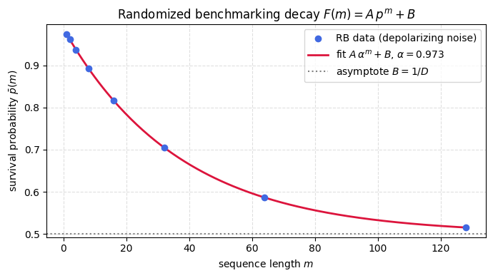

Randomized benchmarking reads the average error per gate off the way a survival probability falls as circuits get longer, sidestepping full process tomography, which scales badly and is itself corrupted by errors in preparing and measuring the qubit. A run applies a sequence of random Clifford gates and then a single recovery gate chosen to invert the whole sequence, so with perfect gates the qubit comes back exactly to where it started. Any drop in the return probability is therefore due to the noise, and averaging over the random Cliffords reshapes that noise into a standard form.
The reshaping is the Clifford twirl. Averaging an error channel over the Clifford group, which is a unitary 2-design, yields a map that commutes with every Clifford, and Schur’s lemma then forces such a map to act as a single scalar \(\alpha\) on the traceless part of any state while leaving the identity fixed, the signature of a depolarizing channel. The intuition is that the random gates scramble any structure the noise had, leaving only its overall strength.
Stacking \(m\) of these depolarizing channels multiplies the traceless part by \(\alpha^m\), so the survival probability follows \(\bar p(m) = A\alpha^m + B\), with the preparation and measurement errors swept entirely into the constants \(A\) and \(B\). One exponential fit returns \(\alpha\), and from it the average gate fidelity \(F_{\mathrm{avg}} = \alpha + (1-\alpha)/D\) and the error rate \(r = (D-1)(1-\alpha)/D\).
A clean single exponential assumes noise that is the same from gate to gate and from step to step, so correlated or coherent errors reveal themselves as deviations from that form. The calculation runs the protocol under depolarizing noise and fits \(\alpha\), then confirms that twirling an amplitude-damping channel, which is neither depolarizing nor even unital to begin with, lands on a depolarizing channel.
Motivation
Randomized benchmarking (RB) is the standard method for characterizing gate fidelity in quantum hardware. It exploits a deep structural result: averaging any CPTP error channel over the Clifford group (a unitary 2-design) twirls it into a depolarizing channel. This twirling theorem is a direct consequence of Schur’s lemma and the Weingarten calculus, the same machinery that produces barren plateaus also produces the clean exponential decay of RB.
The protocol measures only a single scalar quantity (survival probability) as a function of circuit depth, yet extracts the average gate fidelity with no need for full process tomography.
Preliminaries / Toolbox
Before diving into the solution, recall the following concepts:
1. Standard Randomized Benchmarking (RB): A protocol to estimate the average gate fidelity. Sequences of length \(m\) random Clifford gates \(C_i\) are followed by an exact inverse \(C_m^{-1} \cdots C_1^{-1}\) to yield an identity operation. Survival probability decays as \(A p^m + B\).
2. Twirling over the Clifford Group: By Schur’s lemma, averaging a channel \(\mathcal{E}\) over the Clifford group produces a depolarizing channel: \(\frac{1}{|\mathcal{C}|} \sum_{C \in \mathcal{C}} C^\dagger \mathcal{E}(C \rho C^\dagger) C = \mathcal{E}_{\mathrm{depol}}(\rho) = p \rho + (1-p) \frac{I}{d}\).
3. Depolarizing Parameter \(p\) vs Fidelity: The average gate fidelity is related to \(p\) (also written as \(\alpha\)) by \(\bar{F} = p + \frac{1-p}{d}\).
4. Sequence fidelity: The expected return probability is \(\mathrm{Tr}(E \cdot \mathcal{E}_{\mathrm{depol}}^m(\rho_0)) = A p^m + B\) where \(A, B\) absorb state preparation and measurement (SPAM) errors.
Exercise
(a) Prove the twirling theorem: for any CPTP map \(\Lambda\), the Clifford twirl
is a depolarizing channel: \(\widetilde{\Lambda}(\rho) = \alpha\, \rho + (1-\alpha)\frac{I}{D}\).
(b) Show the depolarizing parameter is \(\alpha = \frac{D\, F_{\mathrm{avg}} - 1}{D - 1}\), where \(F_{\mathrm{avg}}\) is the average gate fidelity.
(c) Derive the RB decay: \(\bar{p}(m) = A\,\alpha^m + B\).
(d) Implement and run the full RB protocol numerically; fit \(\alpha\) and extract \(F_{\mathrm{avg}}\).
(e) Verify numerically that the Clifford twirl of the amplitude-damping channel (a non-depolarizing, non-unital channel) produces a depolarizing channel.
Solution
Part (a): The twirling theorem
Claim: If \(\mathcal{C}\) forms a unitary 2-design, then \(\widetilde{\Lambda}(\rho) = \alpha\,\rho + (1-\alpha)\frac{I}{D}\) for some \(\alpha\).
Proof: The twirled channel \(\widetilde{\Lambda}\) commutes with all Clifford unitaries: \(C \widetilde{\Lambda}(\rho) C^\dagger = \widetilde{\Lambda}(C\rho C^\dagger)\) for all \(C \in \mathcal{C}\).
By Schur’s lemma (applied to the irreducible decomposition of the adjoint representation), any CPTP map that commutes with all elements of a 2-design must act as a scalar on each irreducible sector. For qubits, the space of \(D \times D\) Hermitian matrices decomposes into:
The trivial sector: \(\{c \cdot I \mid c \in \mathbb{R}\}\) (dimension 1).
At \(F_{\mathrm{avg}} = 1\): \(\alpha = 1\) (identity). At \(F_{\mathrm{avg}} = 1/D\): \(\alpha = 0\) (fully depolarizing).
Part (c): The exponential decay
In the RB protocol, a sequence of \(m\) random Clifford gates is applied, each followed by noise \(\Lambda\). The effective channel for the full sequence is \(m\) concatenated twirled channels:
This is the characteristic RB form \(\bar{p}(m) = A\,\alpha^m + B\) with \(A = (1 - 1/D)\alpha\) and \(B = 1/D\). A single exponential fit extracts \(\alpha\).
Symbolic Verification (SymPy)
Code
import sympy as spd, p, m = sp.symbols('d p m', positive=True)# Sequence fidelity: F(m) = A*p^m + B# Average gate fidelity: F_avg = p + (1-p)/dF_avg = p + (1- p) / dprint(f'Average gate fidelity: F_avg = {F_avg}')# Solve for p in terms of F_avgp_solved = sp.solve(F_avg - sp.Symbol('F'), p)print(f'p = {p_solved}')# Average gate error rater = (1- p) * (d -1) / dprint(f'Error rate r = {sp.simplify(r)}')# For d=2 (single qubit)print(f'\nSingle qubit (d=2):')print(f' F_avg = {F_avg.subs(d, 2)}')print(f' r = {sp.simplify(r.subs(d, 2))}')
Average gate fidelity: F_avg = p + (1 - p)/d
p = [(F*d - 1)/(d - 1)]
Error rate r = -(d - 1)*(p - 1)/d
Single qubit (d=2):
F_avg = p/2 + 1/2
r = 1/2 - p/2
Parts (d) and (e): Numerical Implementation
Code
import numpy as npfrom scipy.optimize import curve_fitnp.random.seed(42)# Single-qubit Clifford group (24 elements)H = np.array([[1,1],[1,-1]], dtype=complex) / np.sqrt(2)S = np.array([[1,0],[0,1j]], dtype=complex)I2 = np.eye(2, dtype=complex)def gen_cliffords(): result = [] seen =set() queue = [I2.copy()]while queue andlen(result) <24: U = queue.pop(0)for e in U.flatten():ifabs(e) >1e-10: U = U * np.exp(-1j*np.angle(e))break key =tuple(np.round(U.flatten(), 6))if key in seen: continue seen.add(key); result.append(U)for g in [H, S]: queue.append(g @ U)return resultcliffords = gen_cliffords()print(f"Generated {len(cliffords)} single-qubit Cliffords")
%matplotlib inlineimport matplotlib.pyplot as pltimport numpy as np# Decay curve from the actual simulated RB run (cells above): data and fit.m_grid = np.linspace(min(seq_lengths), max(seq_lengths), 200)plt.figure(figsize=(7, 4))plt.scatter(seq_lengths, survivals, color='royalblue', zorder=3, label='RB data (depolarizing noise)')plt.plot(m_grid, rb_model(m_grid, *popt), color='crimson', lw=2, label=fr'fit $A\,\alpha^m+B$, $\alpha={alpha_fit:.3f}$')plt.axhline(B_fit, color='gray', ls=':', label=r'asymptote $B=1/D$')plt.xlabel('sequence length $m$')plt.ylabel(r'survival probability $\bar p(m)$')plt.title(r'Randomized benchmarking decay $F(m)=A\,p^m+B$')plt.legend()plt.grid(True, ls='--', alpha=0.4)plt.tight_layout()plt.show()

Takeaway
The Clifford twirl reduces an arbitrary CPTP error to a single depolarizing parameter \(\alpha\), so the survival probability follows \(F(m)=A\,\alpha^m+B\) and one exponential fit returns \(\alpha\) and the average fidelity. State-preparation and measurement errors fall entirely into \(A\) and \(B\), leaving the fidelity read from the decay rate unbiased.
The Clifford twirl that reduces complicated gate noise to a single depolarizing parameter is the second Haar moment again, the same average that builds the classical shadows channel and gives the Page formula. The exponential decay you fit here is the experimental shadow of that one calculation, which is why benchmarking and shadow tomography rest on the same theory.
References
Emerson et al., Scalable noise estimation with random unitary operators, Journal of Optics B: Quantum and Semiclassical Optics (2005).
Magesan et al., Scalable and robust randomized benchmarking of quantum processes, Physical Review Letters (2011).
Wallman and Flammia, Randomized benchmarking with confidence, IOP Publishing (2014). doi
Magesan et al., Characterizing quantum gates via randomized benchmarking, Physical Review A (2012).
Płodzień, Information Scrambling, Quantum Chaos, and Haar-Random States, lecture notes (2025). arXiv:2511.14397